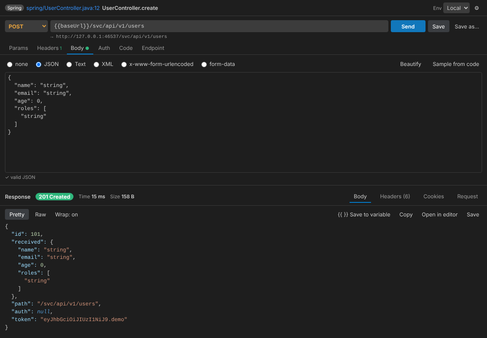

Joining a new code base usually starts with the same question: which endpoints does this service expose, and what do they expect? Routinel (from Route and Sentinel), first released on 9 October 2026, scans the workspace and answers it, then lets you call each endpoint without leaving the editor.

Highlights
- Automatic discovery across Express, Koa, Fastify, NestJS, Next.js, FastAPI, Flask, Django/DRF, Spring and more, including router prefixes and context paths.
- Parameters from code: path, query, headers, cookies, form fields, uploads and JSON bodies generated from your DTOs and models.
- A Postman-style client with environments, secrets kept in the OS keychain, request chaining, collections and history.
- Import and export Postman v2.1 collections and OpenAPI 3, plus code generation for cURL, PowerShell, fetch and Python.
- Mock server (1.3.0) that serves every discovered API locally from saved mocks, OpenAPI examples or generated responses.
Skills applied
Static analysis of Express/NestJS/Spring/FastAPI/Django routes, OpenAPI 3, Postman v2.1, VS Code SecretStorage, mock servers, TypeScript
Release history
- v1.3.0 · 10 October 2026
Mock server for every discovered API. - v1.2.1 · 9 October 2026
Maintenance release. - v1.1.2 · 9 October 2026
Marketplace publishergauravgupta0612; repository links. - v1.1.1 · 9 October 2026
Project names when adding folders or Git repositories. - v1.1.0 · 9 October 2026
Renamed Routinel. - v1.0.0 · 9 October 2026
First release (as Dataman API Lens).
Latest download: Routinel v1.3.0
- ⬇ routinel-1.3.0.vsix (304 KB)
Every earlier version is on the Downloads page.